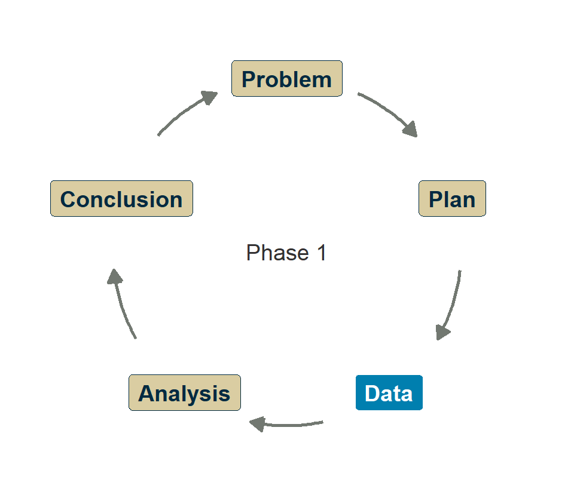
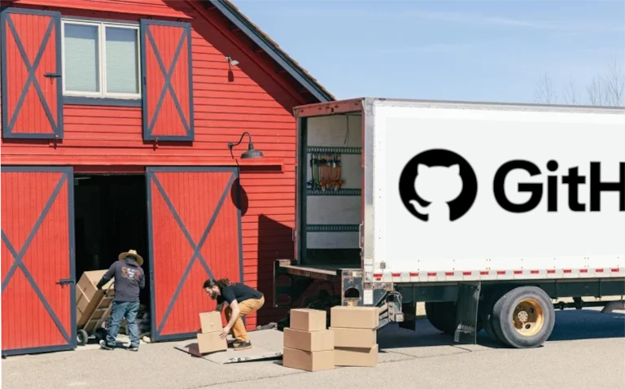
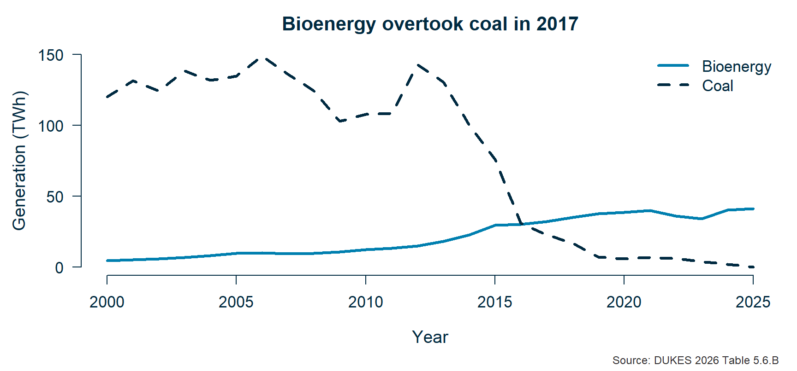

Research Skills — Week 1 Application
By the end of this session, you will have:
.R file to GitHub“Does UK biomass power help reach net zero, and should we keep paying for it?”
This week: explore the data. Get a feel for the numbers.
Next week: make proper figures and start making the case.
🎓💻 Guided walkthrough

🖥️ Navigate to the Week 1 exercise page
“What’s the first thing you notice?”
✏️💻 Exercises 2–5
The WebR page has scaffolded exercises with hints.
Aim for at least exercises 1–4:
Then the quick check: how many times more bioenergy in 2025 than 2000?
Finished early? Try the extension exercises.
📋🎓💻 Setting up your repo
Your code needs to be:
Git does all three. GitHub Desktop makes it painless.
.R filesYour commit history becomes your learning record.

Committing loads the van; pushing sends it to the depot.
🖥️ Switching to GitHub Desktop
biomassweek1.R into the repo folder✏️📋 Clone, commit, push
week1.R — export it from the exercise page, move it into your repo folderRaise your hand when you’ve pushed successfully.
💬 What did you find?
“What did you find in the data?”

“If biomass is counted as zero-carbon, what happens to the UK’s official emissions figures?”
We’ll dig into this next week.
The class discussion board: click Ask for help at the top of geol-skills.github.io
Or there’s a link on Blackboard
Now: reply to Introduce yourself
Next time: “What do the numbers say?”
You’ll learn ggplot2 and start asking: “Is that a big number?”